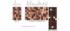
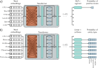
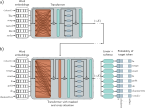
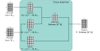
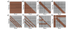

import re, collections
text = "a sailor went to sea sea sea "+\
"to see what he could see see see "+\
"but all that he could see see see "+\
"was the bottom of the deep blue sea sea sea"Transformers for natural language processing

Sub-word tokenization. a) A passage of text from a nursery rhyme. The tokens are initially just the characters and whitespace (represented by an underscore), and their frequencies are displayed in the table. b) At each iteration, the sub-word tokenizer looks for the most commonly occurring adjacent pair of tokens (in this case, se) and merges them. This creates a new token and decreases the counts for the original tokens s and e. Note that the last character of the first token to be merged cannot be whitespace, which prevents merging across words. c) At the second iteration, the algorithm merges e and the whitespace character_. d) After 23 iterations, the tokens consist of a mix of letters, word fragments, and commonly occurring words. e) If we continue this process indefinitely, the tokens eventually represent the full words. f) Over time, the number of tokens increases as we add word fragments to the letters and then decreases again as we merge these fragments. In a real situation, there would be a very large number of words, and the algorithm would terminate when the vocabulary size (number of tokens) reached a predetermined value. Punctuation and capital letters would also be treated as separate input characters.
Tokenization
Embeddings
Transformer model

The input embedding matrix X ∈ RD×N contains N embeddings of length D and is created by multiplying a matrix Ωe containing the embeddings for the entire vocabulary with a matrix containing one-hot vectors in its columns that correspond to the word or sub-word indices. The vocabulary matrix Ωe is considered a parameter of the model and is learned along with the other parameters. Note that the two embeddings for the word an in X are the same.
Encoder model example: BERT
Pre-training

Pre-training for BERT-like encoder. The input tokens (and a special

After pre-training, the encoder is fine-tuned using manually labeled data to solve a particular task. Usually, a linear transformation or a multi-layer perceptron (MLP) is appended to the encoder to produce whatever output is required. a) Example text classification task. In this sentiment classification task, the
Fine-tuning
Deocder model example: GPT3
Language modeling
\[\begin{eqnarray} Pr(\mbox{\textcolor{red}{It takes great courage to let yourself appear weak}}) &=&\nonumber\\ &&\hspace{-8cm}Pr(\mbox{\textcolor{red}{It}})\times Pr(\mbox{\textcolor{red}{takes}}|\mbox{\textcolor{red}{It}})\times Pr(\mbox{\textcolor{red}{great}}|\mbox{\textcolor{red}{It takes}})\times Pr(\mbox{\textcolor{red}{courage}}|\mbox{\textcolor{red}{It takes great}})\times\nonumber \\ &&\hspace{-8cm}Pr(\mbox{\textcolor{red}{to}}|\mbox{\textcolor{red}{It takes great courage}})\times Pr(\mbox{\textcolor{red}{let}}|\mbox{\textcolor{red}{It takes great courage to}})\times\nonumber\\ &&\hspace{-8cm}Pr(\mbox{\textcolor{red}{yourself}}|\mbox{\textcolor{red}{It takes great courage to let}})\times\nonumber\\ &&\hspace{-8cm}Pr(\mbox{\textcolor{red}{appear}}|\mbox{\textcolor{red}{It takes great courage to let yourself}})\times\nonumber\\ &&\hspace{-8cm}Pr(\mbox{\textcolor{red}{weak}}|\mbox{\textcolor{red}{It takes great courage to let yourself appear}}). \end{eqnarray}\]
\[\begin{eqnarray}\label{eq:transformer_autoregressive} Pr(t_{1},t_{2},\ldots, t_{N}) = Pr(t_{1})\prod_{n=2}^{N}Pr(t_{n}|t_{1},\ldots, t_{n-1}). \end{eqnarray}\]
Masked self-attention
Generating text from a decoder

Training GPT3-type decoder network. The tokens are mapped to word embeddings with a special
GPT3 and few-shot learning

Encoder-decoder architecture. Two sentences are passed to the system with the goal of translating the first into the second. a) The first sentence is passed through a standard encoder. b) The second sentence is passed through a decoder that uses masked self-attention but also attends to the output embeddings of the encoder using cross-attention (orange rectangle). The loss function is the same as for the decoder model; we want to maximize the probability of the next word in the output sequence.
Encoder-decoder model example: machine translation

Cross-attention. The flow of computation is the same as in standard self-attention, but the queries are calculated from the decoder embeddings Xdec, and the keys and values from the encoder embeddings Xenc. For translation tasks, the encoder contains information about the source language statistics, and the decoder contains information about the target language statistics.
Transformers for long sequences

Interaction matrices for self-attention. a) In an encoder, every token interacts with every other token, and computation expands quadratically with the number of tokens. b) In a decoder, each token only interacts with the previous tokens, but complexity is still quadratic. c) Complexity can be reduced by using a convolutional structure (encoder case). d) Convolutional structure for decoder case. e–f) Convolutional structure with dilation rate of two and three (decoder case). g) Another strategy is to allow selected tokens to interact with all the other tokens (encoder case) or all the previous tokens (decoder case pictured). h) Alternatively, global tokens can be introduced (left two columns and top two rows). These interact with all of the tokens as well as with each other.
Tokenize the input sentence To begin with the tokens are the individual letters and the whitespace token. So, we represent each word in terms of these tokens with spaces between the tokens to delineate them.
The tokenized text is stored in a structure that represents each word as tokens together with the count of how often that word occurs. We’ll call this the vocabulary.
def initialize_vocabulary(text):
vocab = collections.defaultdict(int)
words = text.strip().split()
for word in words:
vocab[' '.join(list(word)) + ' '] += 1
return vocab
vocab = initialize_vocabulary(text)
print('Vocabulary: {}'.format(vocab))
print('Size of vocabulary: {}'.format(len(vocab)))Find all the tokens in the current vocabulary and their frequencies
def get_tokens_and_frequencies(vocab):
tokens = collections.defaultdict(int)
for word, freq in vocab.items():
word_tokens = word.split()
for token in word_tokens:
tokens[token] += freq
return tokens
tokens = get_tokens_and_frequencies(vocab)
print('Tokens: {}'.format(tokens))
print('Number of tokens: {}'.format(len(tokens)))Find each pair of adjacent tokens in the vocabulary and count them. We will subsequently merge the most frequently occurring pair.
def get_pairs_and_counts(vocab):
pairs = collections.defaultdict(int)
for word, freq in vocab.items():
symbols = word.split()
for i in range(len(symbols)-1):
pairs[symbols[i],symbols[i+1]] += freq
return pairs
pairs = get_pairs_and_counts(vocab)
print('Pairs: {}'.format(pairs))
print('Number of distinct pairs: {}'.format(len(pairs)))
most_frequent_pair = max(pairs, key=pairs.get)
print('Most frequent pair: {}'.format(most_frequent_pair))Merge the instances of the best pair in the vocabulary
def merge_pair_in_vocabulary(pair, vocab_in):
vocab_out = {}
bigram = re.escape(' '.join(pair))
p = re.compile(r'(?
vocab = merge_pair_in_vocabulary(most_frequent_pair, vocab)
print('Vocabulary: {}'.format(vocab))
print('Size of vocabulary: {}'.format(len(vocab)))Update the tokens, which now include the best token ‘se’
tokens = get_tokens_and_frequencies(vocab)
print('Tokens: {}'.format(tokens))
print('Number of tokens: {}'.format(len(tokens)))Now let’s write the full tokenization routine
# TODO -- write this routine by filling in this missing parts,
# calling the above routines
def tokenize(text, num_merges):
# Initialize the vocabulary from the input text
# vocab = (your code here)
for i in range(num_merges):
# Find the tokens and how often they occur in the vocabulary
# tokens = (your code here)
# Find the pairs of adjacent tokens and their counts
# pairs = (your code here)
# Find the most frequent pair
# most_frequent_pair = (your code here)
print('Most frequent pair: {}'.format(most_frequent_pair))
# Merge the code in the vocabulary
# vocab = (your code here)
# Find the tokens and how often they occur in the vocabulary one last time
# tokens = (your code here)
return tokens, vocab
tokens, vocab = tokenize(text, num_merges=22)
print('Tokens: {}'.format(tokens))
print('Number of tokens: {}'.format(len(tokens)))
print('Vocabulary: {}'.format(vocab))
print('Size of vocabulary: {}'.format(len(vocab)))TODO - Consider the input text:
“How much wood could a woodchuck chuck if a woodchuck could chuck wood”
How many tokens will there be initially and what will they be? How many tokens will there be if we run the tokenization routine for the maximum number of iterations (merges)?
When you’ve made your predictions, run the code and see if you are correct.